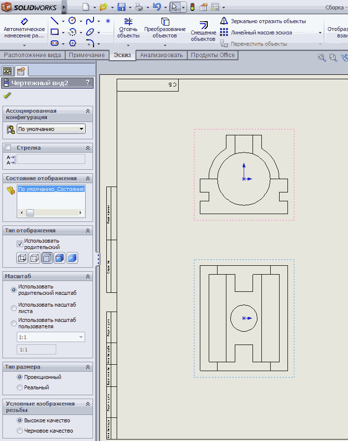
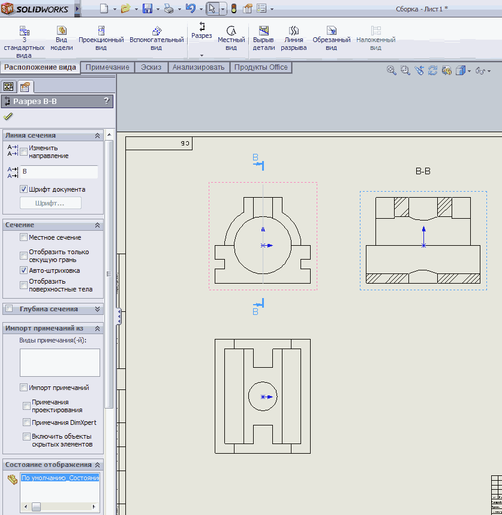
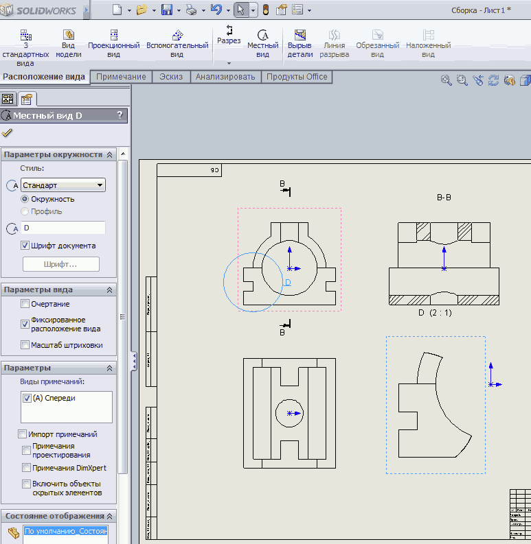
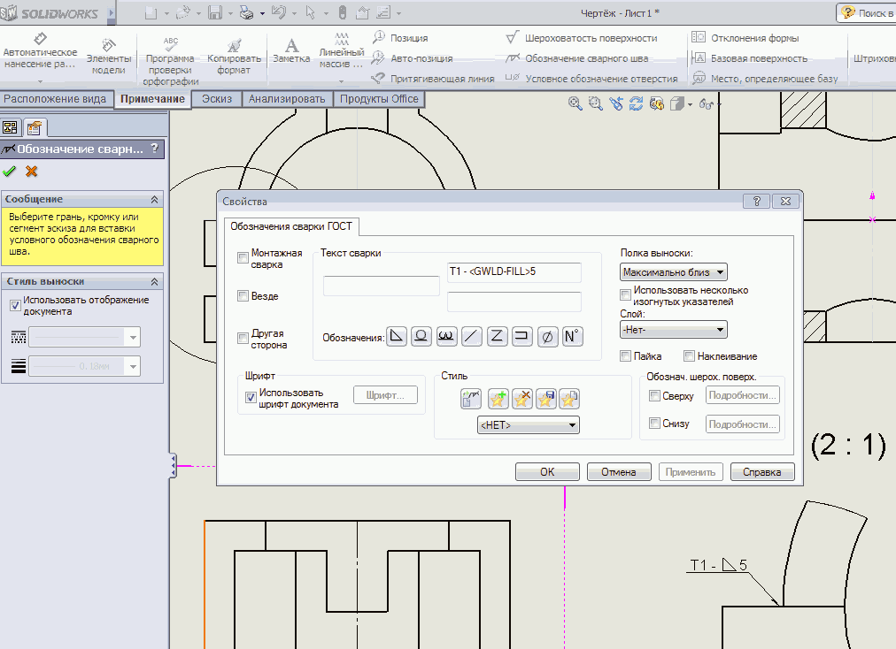
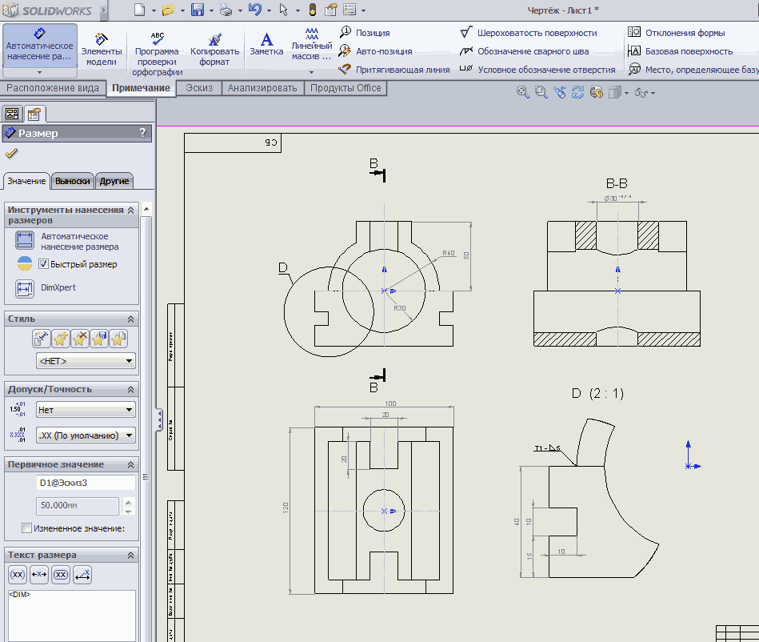
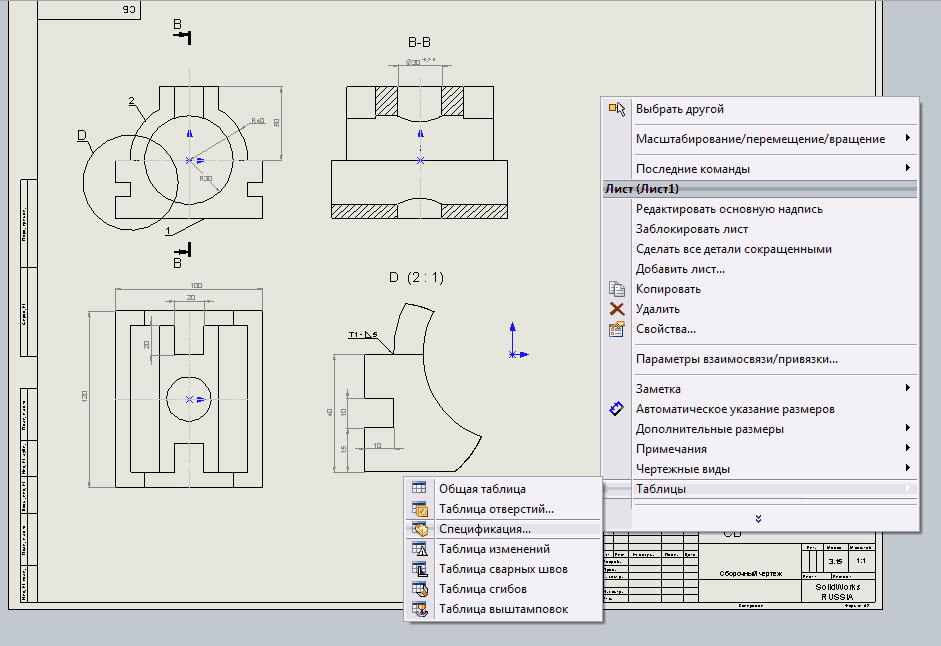
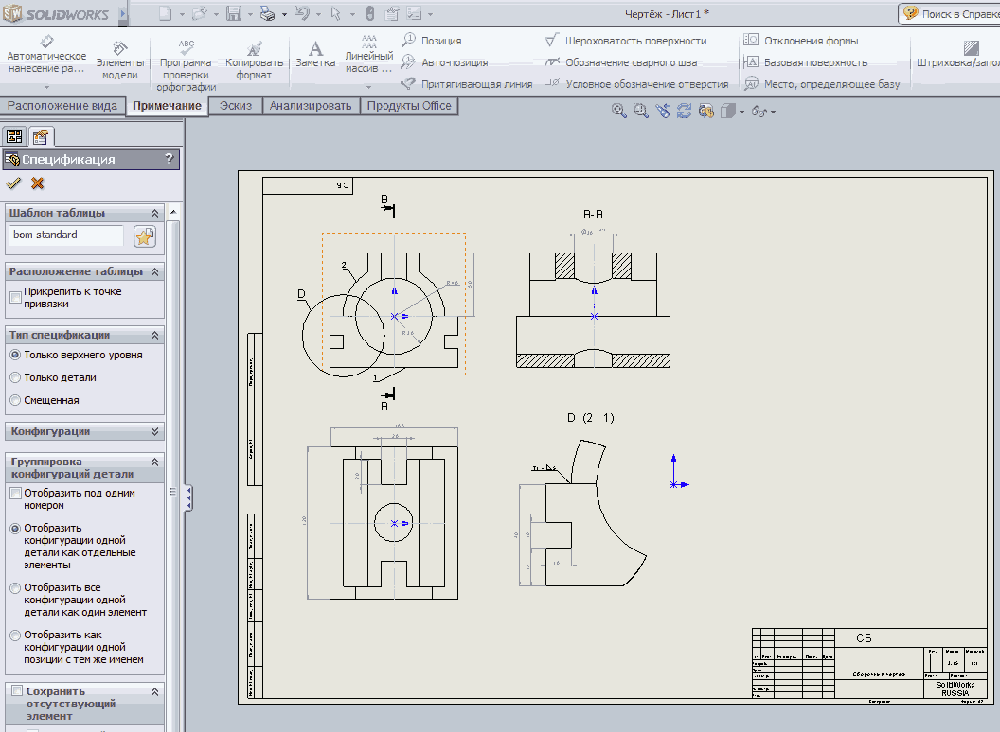

Щёлкнем Обзор и выберем в папке файл модели сборки
Создадим чертёжные виды, щёлкнув левой кнопкой мыши сначала в месте размещения вида спереди, затем в месте размещения вида сверху.

Построим разрез. Зайдём во вкладку Расположение видов и выберем команду Разрез. Укажем курсором с щелчком левой кнопкой мыши крайние точки секущей плоскости разреза, а затем место его расположения на чертеже.

Построим узел в увеличенном масштабе. Зайдём во вкладку Расположение видов и выберем команду Местный вид. Начертим окружность для выбора узла, а затем укажем место его расположения на чертеже.

Отредактируем штриховку. Для этого щёлкнем по ней и в открывшемся окне установим необходимые параметры.
Добавим обозначение сварного шва.
Вкладка Примечание, команда Обозначение сварного шва.

Выполним простановку размеров.
Вкладка Примечание, команда Автоматическое нанесение размеров.

Проставим позиции.
Вкладка Примечание, команда Позиция.
Для создания спецификации сделаем щелчёк правой кнопкой мыши по чертежу и в открывшемся контекстном меню выберем Таблицы — Спецификация.

В открывшемся окне редактирования выберем шаблон спецификации.

Вставим спецификацию в чертёж, указав место курсором с щелчком левой кнопкой мыши.
Для создания технических требований к чертежу используется команда Заметка
вкладки Примечания.
Для редактирования основной надписи сделайте щелчёк правой кнопкой мыши по чертежу
и выберите в контекстном меню Редактировать основную надпись.
После завершения редактирования основной надписи сделайте щелчёк правой кнопкой мыши по чертежу и выберите в контекстном меню Редактировать лист.